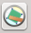

Esta é uma ferramenta voltada para a aquisição vetorial de acordo com a ET-ADGV. Ela permite que o operador defina a escala do produto e defina a área mínima a ser adquirida. Também é possível escolher a forma geométrica que auxiliará o operador (círculo ou quadrado). A ferramenta pode ser acessada pelo seguinte botão  presente na barra de ferramentas do DSGTools.
Ao clicar no botão será possível ver o seguintes botões:
Ao se definir os parâmetros e clicando-se em é possível ver a forma selecionada sendo desenhada sobre a área de desenho do QGIS. Qualquer feição completamente dentro da forma deve ser adquirida como ponto, caso contrário, deve ser adquirida como área. Na figura é possivel ver um exemplo de parâmetros.
Na figura vemos um exemplo de uso ao se medir se a construção em questão deve ser adquirida como área ou ponto.